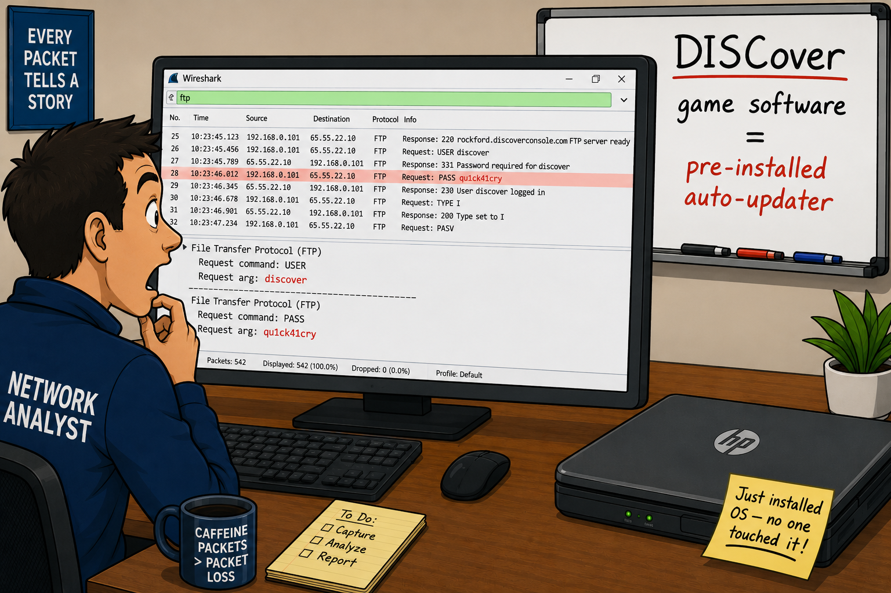

FTP uses two separate TCP connections — a command channel (port 21) and a data channel (dynamically negotiated). The command channel carries all FTP commands and responses in plain text including the username and password. The data channel carries file contents.
- FTP uses two separate TCP connections while HTTP uses one. What advantage does this give FTP for file transfers? What complications does it create for firewalls?
- What is the difference between the FTP commands a user types at the CLI (get, put) and the actual commands that appear in the network trace?
FTP Purpose & Structure
FTP transfers files over TCP (RFC 959). In a typical FTP communication, a command channel is established to port 21 on the FTP server. A secondary data channel is established using dynamic port numbers for actual file and directory transfers. FTP is not secure — username, password, and file contents are all in clear text.
FTP Commands (sent by client)
| Wire Command | Purpose | User Types |
|---|---|---|
| USER | Identify username | username |
| PASS | Supply password | password |
| RETR | Retrieve file from server | get |
| STOR | Send file to server | put |
| PASV | Request passive mode data channel | passive |
| PORT | Set up active mode data channel (client IP + port) | active |
| CWD | Change working directory | cd |
| NLST/LIST | Directory listing | dir / ls |
| DELE | Delete file | delete |
| PWD | Print working directory | pwd |
| QUIT | Terminate connection | quit |
| TYPE I | Set transfer type to binary | binary |
Key FTP Response Codes
| Code | Meaning |
|---|---|
| 220 | Service ready for new user (banner) |
| 227 | Entering Passive Mode (IP,port) — server tells client where to connect |
| 230 | User logged in successfully |
| 331 | Username okay, need password |
| 530 | Not logged in (wrong password) |
| 150 | About to open data connection |
| 226 | Closing data connection, transfer successful |
| 425 | Can't open data connection (may include bounce attack notice) |
| 550 | File unavailable |
FTP Filters
| Filter | Description |
|---|---|
ftp | FTP command channel (port 21 only) |
ftp-data | FTP data channel |
ftp || ftp-data | Both command and data channels |
ftp.request.command=="USER" | FTP login attempts |
ftp.request.command=="PASV" | Passive mode requests |
ftp.response.code==230 | Successful FTP logins |
ftp.response.code==227 | Server entering passive mode |
Passive mode (PASV) has the client establish the data connection — friendlier for firewalls protecting the client. Active mode (PORT) has the server establish the data connection back to the client — problematic when the client is behind a NAT or firewall.
- A client is behind a NAT firewall and tries active mode FTP. Why does it fail, and why does switching to passive mode fix it?
Passive Mode vs Active Mode
| Feature | Passive Mode (PASV) | Active Mode (PORT) |
|---|---|---|
| Command | Client sends PASV | Client sends PORT (with client IP:port) |
| Who establishes data channel | Client connects to server's provided port | Server connects back to client's provided port |
| Server response | 227 Entering Passive Mode (IP,p1,p2) | 200 PORT Command Successful |
| Firewall friendly | Yes — client initiates outbound connections only | No — requires inbound connection from server to client |
| NAT friendly | Yes | No (sends private IP in PORT command) |
FTP Data Transfer Reassembly
To reassemble FTP data: Follow TCP Stream on the data channel, define format as raw, and choose Save As. If the file type is unknown, look for a file identifier (magic bytes) in the raw data to determine the format. The filename is visible in the command channel's RETR or STOR packet.
ftp-data display filter.Case Studies
When a new computer comes into the office we typically perform an idle analysis of the system — we start it up and capture traffic while it sits untouched.
One day a new Windows XP Home Edition laptop arrived. We started it up, installed the OS, and let it sit alone while we captured traffic. What we found was most unexpected — an FTP connection to rockford.discoverconsole.com, with the username "discover" and the password "qu1ckp41cry" clearly visible in plain text.
We saw a CWD request for DISCoverFTP/SystemUpdates/HP_DEC. Why would a brand-new OS installation try to make an FTP connection to a remote server?
Research revealed that HP shipped their Windows XP Media Center edition with a pre-installed game console software called "DISCover" that automatically updated itself via FTP at startup. Many users reported slow startup times correlated with this DISCover software. Interestingly, the software wasn't visible in Add/Remove Programs.
The lesson: always perform an idle analysis of new systems before deployment. You never know what background processes are communicating on behalf of pre-installed software.

FTP is a TCP-based file transfer application using a separate connection for commands and data. The most common port for the FTP command channel is port 21. The data channel may use port 20 or a port established through PORT or PASV.
There are two types of FTP transfer processes — active mode (PORT command, server connects to client) and passive mode (PASV command, client connects to server). Passive mode is firewall- and NAT-friendly. Active mode can fail behind NAT. FTP is not secure — username, password, and file contents are in clear text. FTP data transfers can be reassembled using Follow TCP Stream → raw → Save As.